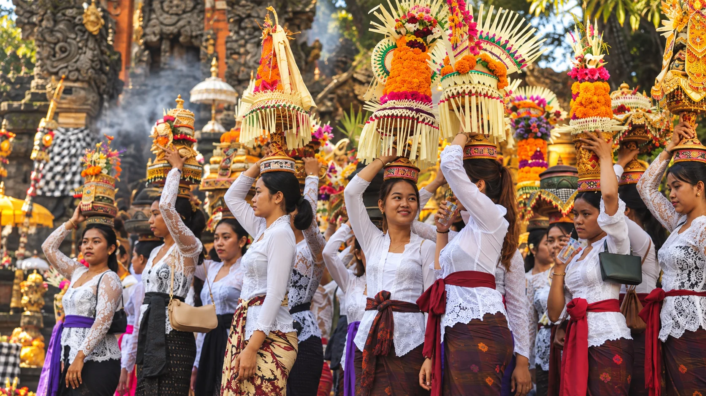
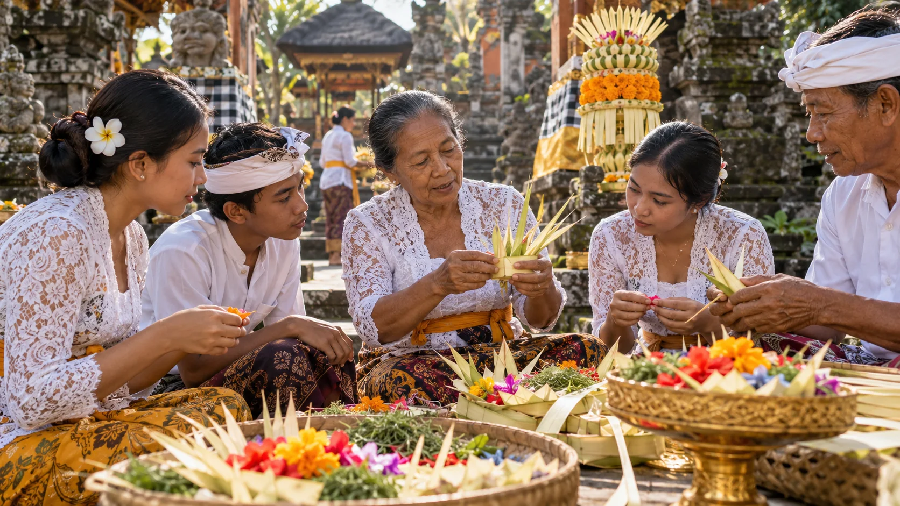
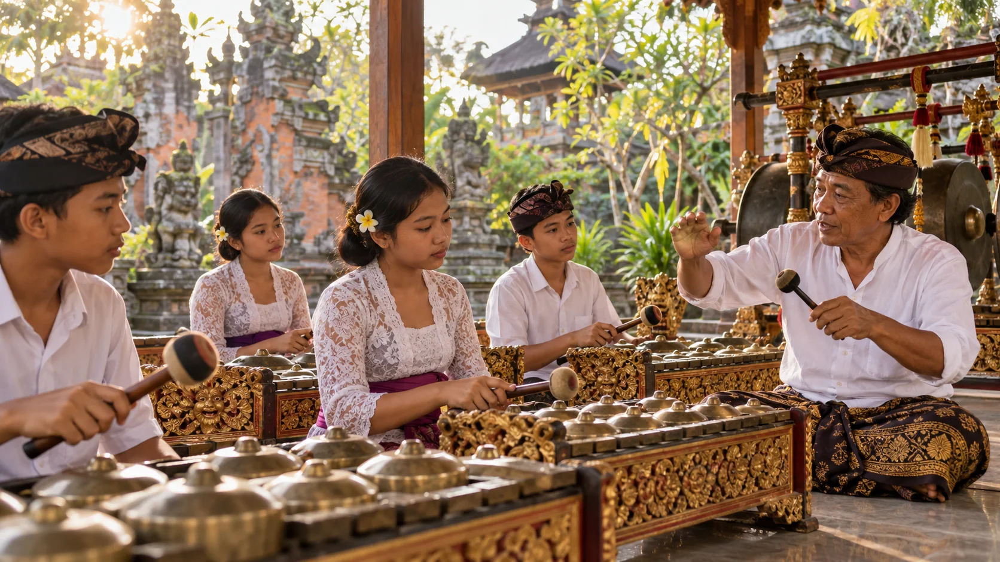
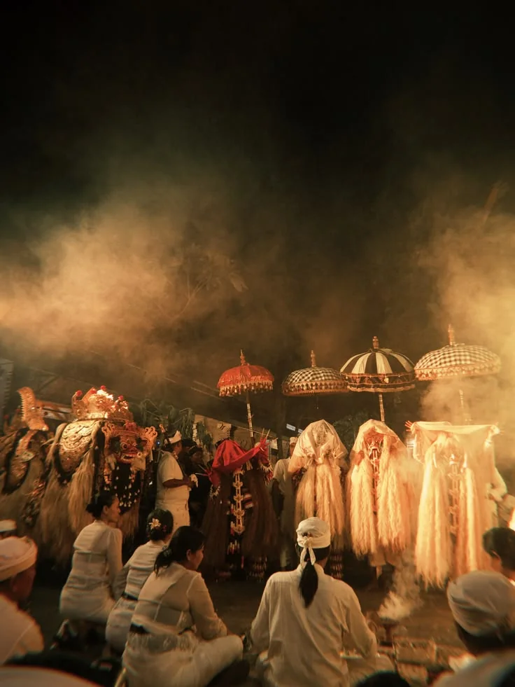
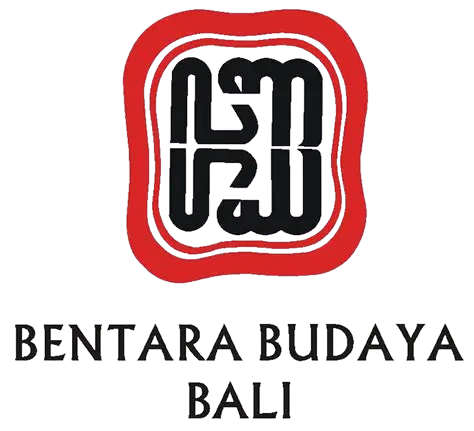
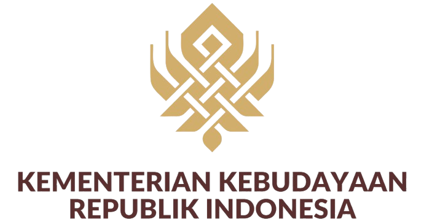
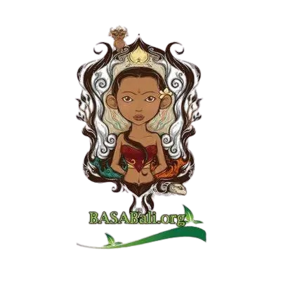

Tradisi Terancam Pudar
Arus modernisasi mengikis tradisi Bali. Tanpa kepedulian, identitas budaya ini bisa hilang ditelan zaman.
Temukan cerita dan keunikan tradisi budaya Bali yang tetap hidup di tengah perkembangan zaman.
Permasalahan
Arus modernisasi mengikis tradisi Bali. Tanpa kepedulian, identitas budaya ini bisa hilang ditelan zaman.
Dokumentasi ritual Bali masih tersebar dan acak. Tanpa arsip digital terstruktur, pengetahuan budaya ini rentan hilang.
Cara belajar yang kaku bikin generasi muda malas mendalami budaya Bali. Perlu platform digital interaktif biar mereka tertarik.
Kegunaan Sekala

Sekala menyediakan arsip budaya interaktif tempat pengguna mengeksplorasi beragam tradisi Bali dengan cara yang menyenangkan.

Kenali makna di balik setiap prosesi, simbol, dan perlengkapan upacara melalui cerita budaya yang disajikan dengan jelas.

Arsip digital Sekala membantu pengetahuan budaya tetap mudah ditemukan dan dipelajari oleh generasi berikutnya.
Ulasan Pengguna
Tentang Kami
Sekala hadir untuk mendokumentasikan dan menghidupkan kembali tradisi Bali. Lewat narasi dan visual bermakna, kami mengajak generasi muda menjaga keberlanjutan budaya Bali di era modern.
Menjadi wadah digital utama yang mengabadikan dan mengenalkan tradisi Bali ke dunia.

Mendokumentasikan setiap tradisi, filosofi, dan upacara budaya Bali secara otentik.
Merangkul generasi muda dan penikmat budaya untuk merawat tradisi Bali.
Menjadi jembatan informasi budaya Bali yang terstruktur dan mudah diakses.
Komunitas
10k rating(4.8)



Jelajahi setiap sudut kebudayaan Bali, pahami makna di balik ritual tradisi warisan leluhur, dan nikmati sajian visual otentik yang membawa tradisi Bali lebih dekat denganmu.
Lihat SelengkapnyaYa, 100% gratis. Seluruh arsip dokumentasi, narasi sejarah, dan penjelasan tradisi di Sekala dapat diakses oleh publik tanpa dipungut biaya.
Di Sekala, Anda dapat menemukan penjelasan lengkap mengenai berbagai tradisi yang ada di Bali lebih dalam, mulai dari pengenalan tradisinya, sejarah dan asal-usul, tujuan, makna dan filosofi, prosesi pelaksanaan tradisi, pelestarian, hingga dokumentasi galeri tradisi kebudayaan Bali tersebut.
Kami berupaya menyajikan informasi yang jelas. Untuk keperluan rujukan, periksa sumber pada konten terkait dan konfirmasikan dengan pelaku budaya setempat.
Sekala terbuka untuk semua orang ,mulai dari masyarakat umum, generasi muda Bali, wisatawan, akademisi, hingga penikmat budaya dari seluruh dunia yang ingin mengenal Bali lebih dalam.